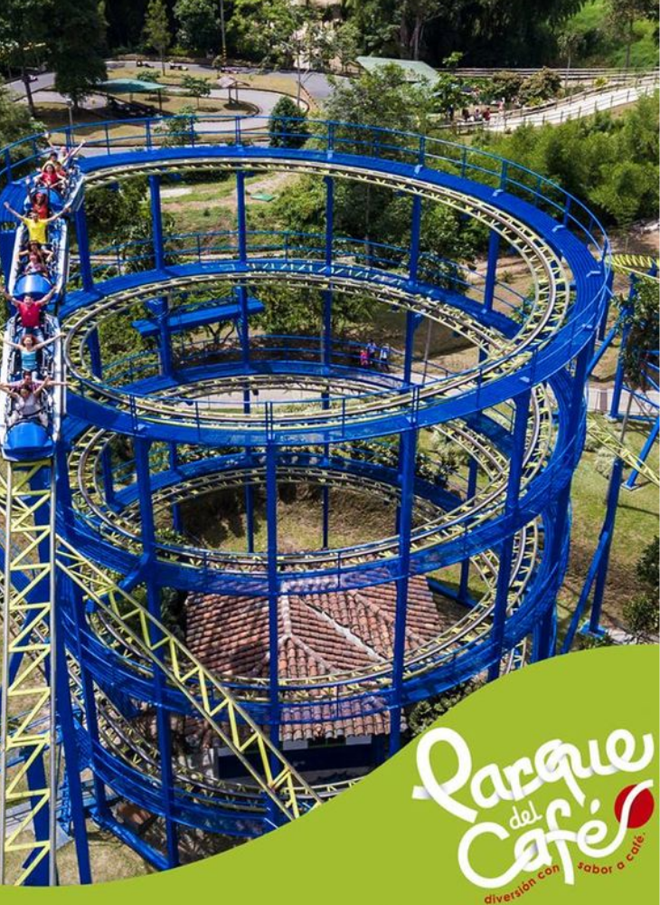

Productos
Productos
Disfruta nuestros productos y servicios.
El Valle del Cocora :
El Valle de Cocora es sin duda, uno de los referentes turísticos de Colombia, y en Especial del Eje Cafetero, es cuna la Palma de Cera, árbol nacional de Colombia, declarado por el gobierno nacional en el año de 1.985

El Parque del Café :
Es considerado como uno de los diez parques temáticos más importantes de Latinoamérica, y cada año lo visitan más de 1 millón de turistas de todo el mundo. Con sus más de 25 atracciones, el Parque del Café, es el lugar ideal para que adultos, jóvenes y niños puedan divertirse por igual.
Termales Santa Rosa del Cabal :
En el interior de los paisajes verdes del departamento de Risaralda, a escasos 10 km de Santa Rosa de Cabal, brotan estas aguas termales desde el interior de la Tierra a más de 60 grados. Su origen volcánico y su composición hacen que sean especialmente ideales para tratamientos de relajación y descanso (son las llamadas aguas telúricas).
Sombrero y poncho :
Los oficios más tradicionales llevan décadas arraigados en la tierra del café esperando a ser transmitidos de generación en generación, como es el caso del sombrero aguadeño, una singular artesanía que sólo podrás encontrar en el eje cafetero. Se elaborado principalmente con palma de iraca beige y cada uno de ellos es tejido a mano por mujeres campesinas desde hace más de 150 años.
Recordatorios :
En Armenia se concentra el ingenio de los artesanos locales y regionales que materializan sus ideas en la guadua, la cestería y otras fibras naturales. Muchos de los artífices quindianos se inspiran en el café como tema y materia prima para la creación de sus trabajos. Además de los materiales tradicionales, desde hace algunos años en Armenia un grupo de personas viene trabajando sobre el tarralí, una especie de calabazo o totumo.
Café Quindío :
Es Nuestro Blend Especial de la casa, con una taza única y sabor intenso con notas acholatadas es el café emblemático del corazón de Colombia. Seleccionamos cuidadosamente café excelso de diferentes zonas montañosas del Quindío, las cuales varían su ubicación en altitudes que van desde 1.600 m.s.n.m. hasta 1.800 m.s.n.m. Finalmente mezclamos las cosechas y obtenemos un B lend original de muy alta calidad.